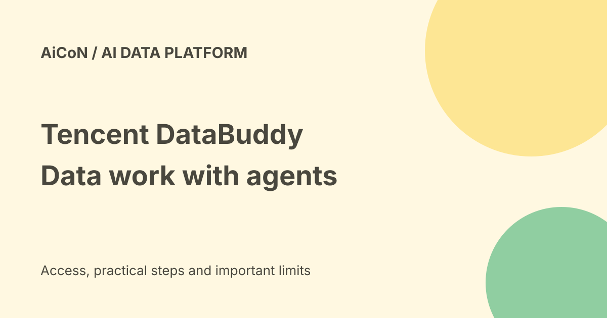

Tencent DataBuddy: data agents, trial access and India limits
Tencent Cloud DataBuddy is a managed Data + AI workbench for enterprise teams. Agents can help build pipelines, check data quality and answer business questions. Trial registration is advertised, but the launch market list does not include India and production pricing is not established here.

What is Tencent Cloud DataBuddy?
DataBuddy brings AI agents into a data platform rather than adding only a chatbot beside it. Tencent announced it on 23 September 2026 as an assistant-class product alongside CodeBuddy and WorkBuddy. These names describe different products; a coding assistant account does not prove access to this data workbench.
The official overview describes a shared foundation for data engineering, governance, analysis and AI development. Metadata means information about the data, such as its schema and owner. Lineage means the history of where a field came from and how it changed. Those details help an agent understand a business question without relying only on a column name.
Four areas of work
- Data engineering: data ingestion, warehouse layers, pipeline code and scheduling. A pipeline moves or transforms data through a series of steps.
- Data governance: metadata, quality checks, sensitive-data risks and rules.
- Data analytics: natural-language questions, charts and investigation of unusual changes.
- Data science: model training, experiments, model management and service deployment.
The launch says model deployment can fall from 30 days to 7. The product page advertises large reductions in repetitive work. These are Tencent's claims, not measured results from AiCoN or a promise for your project. Data quality, permissions, connectors and review requirements can change the outcome.
Which data sources can it use?
The product page lists relational databases such as MySQL, PostgreSQL, Oracle and SQL Server; big-data sources such as Hive, HDFS and ClickHouse; file sources including FTP, SFTP and COS; Redis and Elasticsearch; and message queues such as Kafka.
A named connector does not prove that every version, network setup or operation is supported. Confirm the exact connector, authentication method, read/write scope and region with Tencent before planning a migration.
Does data have to move?
The launch describes connecting existing OLAP engines with zero data movement or adopting a unified storage and compute platform. OLAP engines are systems built for analytical queries. The current product page describes federated queries, shared table formats and serverless compute.
This is an architectural option, not a blanket promise that no information ever leaves your system. Ask where queries run, where results and logs are stored, how prompts are handled and what the AI models receive. Moving an entire warehouse and sending a small query result are different risks.
India availability and free versus paid
Tencent's launch release names China, Thailand, South Korea and Indonesia, with rollouts across Europe and the Americas. It does not name India. That does not prove a permanent ban, but it is not enough to label the service available to Indian businesses.
The launch points to the official portal for product trial registration. No fixed public production price, trial duration, credit allowance or complete billing terms was established from the reviewed pages. A trial route is not an unlimited free plan. Confirm eligibility, region, data-processing location, trial expiry, compute charges and what happens when credits end before starting.
Indian teams should ask Tencent whether an Indian organization can register, which region serves it and whether the contract meets its data and security requirements. Do not use a foreign region as an assumed workaround for uncertain eligibility.
A safe pilot plan
- Open the official product page and trial portal. Confirm organizational and regional eligibility first.
- Ask for the trial limits, billing rules and supported connectors in writing.
- Choose a small non-sensitive dataset or a read-only test environment.
- Define one task, such as a daily sales report with agreed metrics and a clear time range.
- Grant only the permissions needed for that task. Keep production write access separate.
- Review generated queries, transformations, schedules and proposed changes before execution.
- Compare the output with a trusted manual query and examine error cases.
- Measure query cost, build time and review time before expanding the pilot.
This is a pilot checklist, not a tested click-by-click account setup. We did not register a trial, connect a database or run an agent.
Security controls do not remove review
The official technical overview lists fine-grained access controls, prompt-injection detection, on-behalf-of permission constraints and high-risk SQL interception. These are described safeguards, not proof that every bad query will be stopped.
Inspect what an agent proposes, especially a deletion, a schema change, a new scheduled job or an export. Keep a recovery plan, audit logs and named human approvers. Data from a file or database can contain misleading instructions; it should be treated as data, not permission to change the task.
What changed since the original post?
This guide adds current connector examples, the technical architecture and a practical pilot checklist. It keeps the original region warning rather than presenting India access as confirmed. The zero-movement and 30-to-7-day statements remain attributed launch claims. Trial and production costs still need a vendor answer.
FAQ
Is DataBuddy a free personal assistant?
No permanent free consumer plan was established. It is presented as an enterprise data platform with a trial-registration route.
Can an Indian company definitely use it today?
The reviewed launch list does not establish that. Ask Tencent for current eligibility and region details.
Should an agent get full database permissions?
No. Start with limited read-only access and add reviewed permissions only when the task needs them.
Sources: Current DataBuddy product and connectors · Technical product overview · Tencent-issued launch release and market list · Official trial registration portal. Checked 7 October 2026.